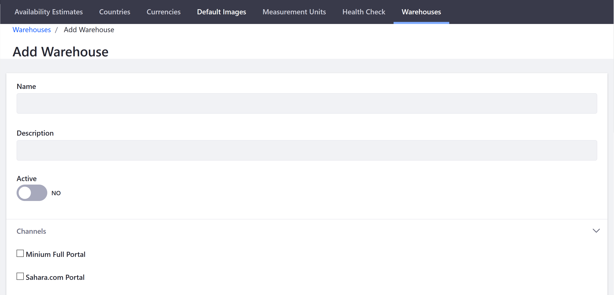
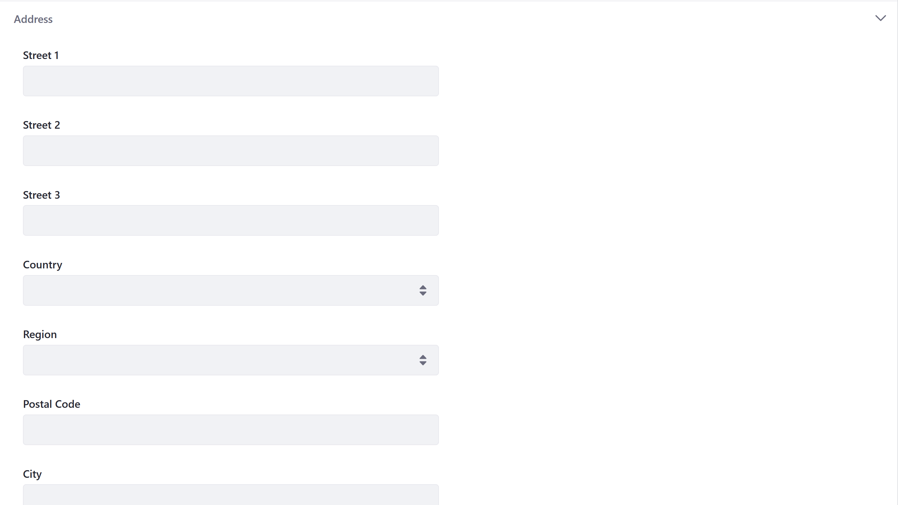
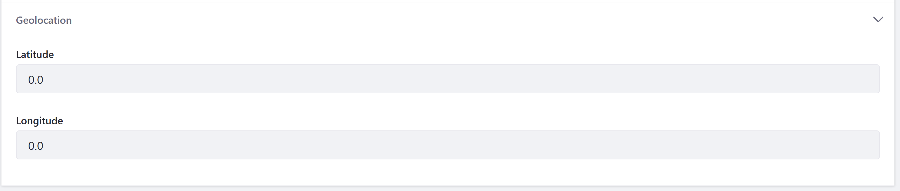

Warehouse Reference Guide¶
Warehouses represent physical locations where product inventory is managed and shipped for order fulfillment. Store administrators set inventory quantities per warehouse. Available inventory is then calculated by Liferay Commerce to determine the total available inventory for sale across warehouses.
Liferay Commerce allows multiple warehouses across geographic locations.
To manage your warehouses, navigate to the Control Panel → Commerce → Settings. Click the Warehouses tab.

| Field | Description | | — | — | | Name | Name of the Warehouse | | Description | Additional Information | | Active | Toggle to designate warehouse as active | | Channels | List of checkboxes for all channels this warehouse serves |

| Field | Description | | — | — | | Street 1 | Address』s first line | | Street 2 | Address』s second line | | Street 3 | Address』s third line | | Country | Dropdown menu to select a country | | Region | Dropdown menu to select the state or province | | Postal Code | Field to enter the postal code | | City | City where the warehouse is located |

| Field | Description | | — | — | | Latitude | Warehouse』s Latitude | | Longitude | Warehouse』s Longitude |
If there are more than one warehouse, repeat these steps to add the others.
Additional Information¶
- Introduction to Shipments (TODO)
- Adding a New Warehouse
- Setting Inventory by Warehouse